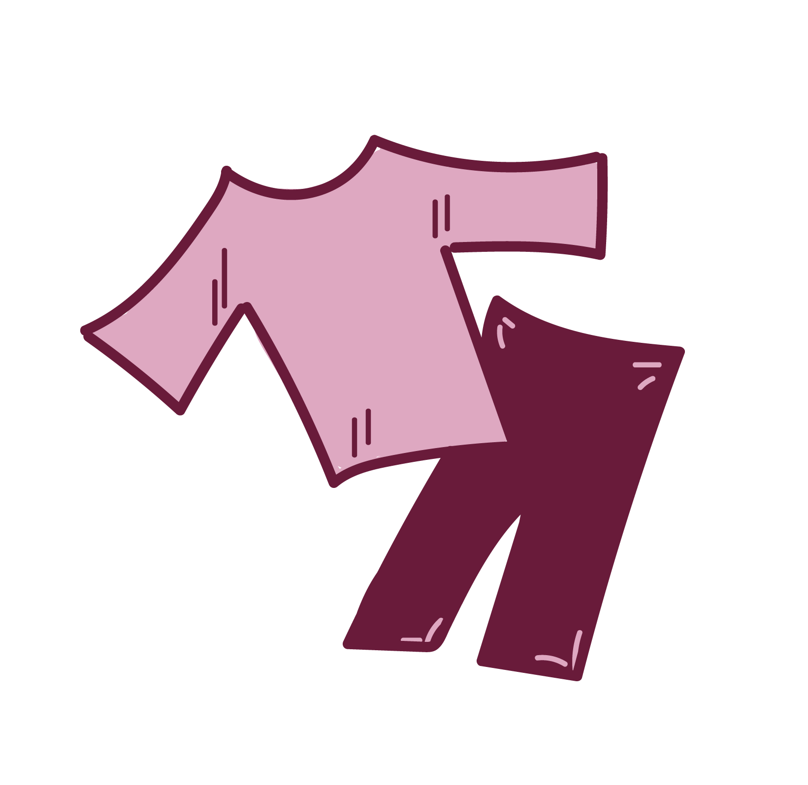

Gems at IJhallen
Wat is de IJhallen?
De IJhallen is de grootste vlooienmarkt van Europa en vindt plaats in Amsterdam Noord. Het is een ontzettend sfeervolle en inspirende plek. Elke maand vindt er een weekend plaats waarin duizenden bezoekers de markt bezoeken. Er valt genoeg te doen op deze interessante vintage markt.
Ben je liefhebber van duurzaamheid en kringloop, dan is dit de perfecte manier om tweedehands items te scoren. Gems at IJhallen vertelt waarom de IJhallen zo'n inspirende en duurzame plek is.
Wat valt er te doen?
Er is genoeg leuks te doen bij de IJhallen. Lees er hier meer over!
Lees meerDuurzaamheid

De IJhallen draagt bij aan een lagere ecologische voetafdruk. Wil je hier meer over weten?
Ontdek meerData & Locatie

Wil je zelf ook de IJhallen bezoeken? Lees hier waar en wanneer je kan gaan?
Lees meer